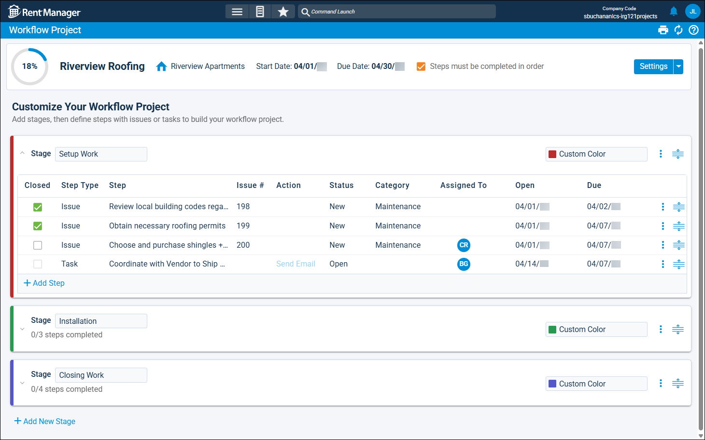

Source: https://rmxhelp.rentmanager.com/Topics/Express/CSH/Workflow-Project-Details.htm
Workflow Project Details (Page)
Workflow projects are used to organize and coordinate your team to accomplish a major goal. Each workflow project is composed of stages, which are distinct phases of the project. Each stage contains steps (service issues and/or tasks), and as each step is closed, the project progresses toward completion. By using workflow projects, your team members can be assigned to steps within the same project to collaborate effectively, each handling their assigned work while staying informed about the overall progress. This level of organization is beneficial when coordinating complex activities such as renovations, new tenant workflows, or employee onboarding.
The workflow project's details page displays general information about the workflow project, as well as an overview of each stage and step within it.
Related Privileges
| Group | Privilege | Column |
|---|---|---|
| Service Manager | Workflow Projects | View |
For more information, refer to Control User Access.
To view a workflow project's details, go to  arrow_forward Services arrow_forward Workflows arrow_forward Workflow Projects and select a workflow project from the list.
arrow_forward Services arrow_forward Workflows arrow_forward Workflow Projects and select a workflow project from the list.

The actions available on a workflow project depend on the settings selected when it was created. On workflow projects created with the option Start from scratch, you can add stages and steps. On workflow projects created with the option Use a template, you can only add steps to stages already created in the template. If the template has the option Restrict editing on workflow projects with this workflow template selected, you cannot add or edit stages and steps without the following privilege.
Related Privileges
| Group | Privilege | Column |
|---|---|---|
| Service Manager | Edit workflow projects using a restricted workflow template | Enabled |
For more information, refer to Control User Access.
General Information
The page header displays basic information about the workflow project, such as its name, entity link, and a dynamic progress tracker that increases in percentage as steps in the workflow project are marked as Closed. The following fields are available.
| Field | Description |
|---|---|
|
Due Date |
The date by which all steps in the workflow project must be completed. |
|
Workflow Project Type |
The name of the entity (e.g., Riverview Apartments, Charlie Apegian, 11B, etc.) that the workflow project is linked to. |
|
Name |
The title of the workflow project (e.g., Riverview Roofing, Repave Parking Lot, Renovate New Property, Landscaping Overhaul). |
|
Parent Workflow Project |
The name of another workflow project designated as the parent of this project. The child workflow project displays as a stage in the parent workflow project. |
|
Start Date |
The date on which the workflow project begins. |
|
Steps must be completed in order |
Requires the steps and stages in this workflow project to be completed in the order displayed on the details page. For example, the first stage of a project must be completed before the second stage can begin, and the first issue in the first stage must be completed before the second issue in that stage can begin. |
Stages and Steps
The stages and steps outline the work that must be done to complete a workflow project. You can use  to click and drag them into the correct sequence. Steps can also be moved from one stage to another using this action.
to click and drag them into the correct sequence. Steps can also be moved from one stage to another using this action.
Stages
Stages are distinct phases of the workflow project that issues and tasks are added to. You can collapse or expand each stage by clicking its header. The following fields are available.
| Field | Description |
|---|---|
|
Color |
The name of the user assigned to all issues added to the project. |
|
Category |
The issue category used as the default type for all issues within the project (e.g., Property Wide, Maintenance, Electrical, Plumbing, Emergency, Office). |
|
Default link to |
The default link type (Current Tenant, Past or Future Tenant, Prospect, Unit, Property), if any, for new issues added to the project. The field below then allows you specify which tenant, prospect, unit, or property this project is associated with. |
|
Job |
If applicable, the name of the job to track transactions associated with the project. The job is assigned to all issues within the project. For more information, refer to Jobs (Page). Related Preferences In order to use the job costing tool in Rent Manager, Enable job costing must be checked in system preferences. For more information, refer to General Options (System Preferences). |
|
Priority |
The issue priority used as the default description of the urgency assigned to for all issues within the project (e.g., Critical, High, Medium, Low). |
|
Status |
The issue status used as the default description of the current progress of all issues within the project (e.g., New, Work in Progress, Resolved, Unresolved). |
|
Template |
The name of the organized collection of issues that all work towards the completion of a single major task. For more information, refer to Workflow Templates (Page). |
|
Name |
The title of the stage that describes the general category of work it involves. |
Steps
Steps are the issues and tasks that must be closed in order to complete the workflow project. The following columns are available.
| Column | Description |
|---|---|
|
Closed |
When checked, indicates that the step is complete. |
|
Step Type |
The kind of step—either Issue or Task—to be completed. |
|
Step |
The name in the Title of the issue or the Subject of the task. |
|
Issue # |
The system-generated number linked to the service issue. For tasks, this column is blank. |
|
Action |
The work required to complete the task. For issues, this column is blank. |
|
Status |
The condition that describes the current progress of the issue or task, such as New or Waiting for Parts. |
|
Category |
The classification that best describes the type of issue. For tasks, this column is blank. |
|
Assigned To |
The user responsible for completing the step. |
|
Open |
The date that the step is added, or when work on it should commence. |
|
Due |
The date by which the step must be completed. |
Row Actions
The following row actions are available for each step.
| Action | Description | |||||||||||
|---|---|---|---|---|---|---|---|---|---|---|---|---|
|
Delete |
Related Privileges Depending on which step type you are trying to delete, either the tasks or issues privilege is required.
For more information, refer to Control User Access. Permanently delete the issue or task from the workflow project and Rent Manager. This action cannot be undone. |
|||||||||||
|
Details |
Related Privileges Depending on which step type you are trying to view, either the tasks or issues privilege is required.
For more information, refer to Control User Access. Open the issue's details page or the task pop-up. |
|||||||||||
|
Remove |
Related Privileges Depending on which step type you are trying to remove, either the tasks or issues privilege is required.
For more information, refer to Control User Access. Remove the step from the workflow project, but do not delete it from Rent Manager. You might take this action if, for example, a particular issue is out of scope for the workflow project, but should still be completed independently of the project. |
Settings
To view the settings configured for the workflow project, click Settings in the page header.
General Settings
The following general options are available.
| Field | Description |
|---|---|
|
Workflow Template |
The name of the workflow template (e.g., Kitchen Remodeling) linked to the workflow project. This field displays only if the project is generated from a workflow template. |
|
Description |
A brief explanation of the workflow project's purpose (e.g., Complete all steps in order when remodeling kitchens). |
|
Workflow ProjectType |
The entity type that the workflow project is associated with (e.g., Property, Tenant, Vendor, etc.). |
|
Workflow Project Name |
The name of the workflow project (e.g., Bathroom Renovation, New Employee Training, Repave Parking Lot, and so on). |
|
Start Date |
The day on which work associated with the workflow project begins. |
|
Due Date |
The day by which all steps in the workflow project should be complete. |
|
Steps must be completed in order |
Require all stages, and the issues and tasks in those stages, to be completed in the order they are displayed in the workflow project. For example, you must start with the first stage in the workflow project and complete all the steps within that stage in the order they are listed before you can start the second stage. |
|
Link |
The specific entity (e.g., Unit 11 for a unit, Riverview Apartments for a property, etc,) that the workflow project is associated with. Depending on the Workflow Project Type selected, this field displays different text. For example, if the Workflow Project Type is Property, this field displays as Link to Property. |
Default Issue Values
The default values selected for issues will automatically populate in the issue-type steps of the workflow project. The following fields are available.
| Field | Description |
|---|---|
|
Assigned To |
The user responsible for completing the service issue. For example, for a maintenance-related workflow project, you might wish to assign all issues to a service tech manager who will oversee the project. |
|
Category |
The type of service issue (e.g., Property Wide, Maintenance, Electrical, Plumbing, Emergency, Office). For more information, refer to Issue Categories (Page). |
|
Jobs |
The job used to track finances associated with the workflow project. For more information, refer to Jobs (Page). Related Preferences In order to use the job costing tool in Rent Manager, Enable job costing must be checked in system preferences. For more information, refer to General Options (System Preferences). |
|
Priority |
The urgency you assign to the service issues (e.g., Critical, High, Medium, Low). For more information, refer to Issue Priorities (Page). |
|
Status |
The default state of the service issues (e.g., New, Work in Progress, Resolved, Unresolved). For more information, refer to Issue Statuses (Page). |
|
Vendor |
The vendor associated with the work defined in the issue’s Work Order tile. Leave this field as <Unassigned> if multiple vendors are involved or you do not wish to assign a default vendor to new service issues. |
Default Task Values
The default values selected for tasks will automatically populate in the task-type steps of the workflow project. The following fields are available.
| Field | Description |
|---|---|
|
Actions |
The action that needs to be taken to complete this task (e.g., Write Letter, Enter an Invoice, Post Utilities). The options that display are from a predetermined list of actions that can be performed in Rent Manager. |
|
Assigned To |
The user responsible for completing the task. |